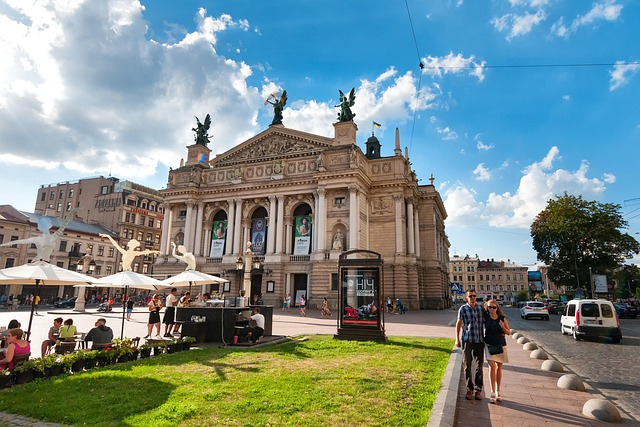

Львів — одне з найвідоміших міст України. Мені подобається його архітектура, центр міста та атмосфера.

Я обрав Львів, тому що це красиве місто, де багато цікавих місць і можна добре провести час.
Моя оцінка: 9/10
Додаткова інформація